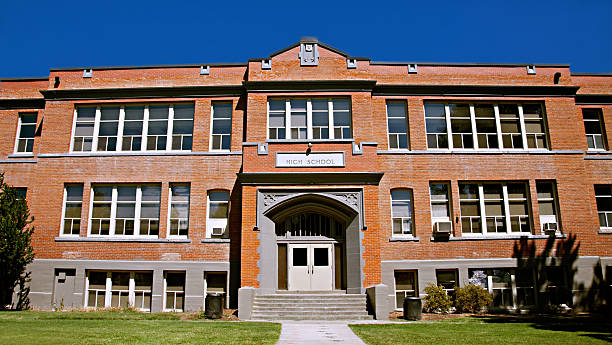

The Beginning
Every great school has a story that reflects its commitment to education, community, and the development of young minds. Voorpos Primary School was founded with the vision of creating a safe and inspiring learning environment where every learner could grow academically, socially, and personally.
Established in 1998 by dedicated educators and community leaders, the school started with only a few classrooms and a small group of passionate teachers. Despite these humble beginnings, the founders believed that quality education could transform the future of young learners.